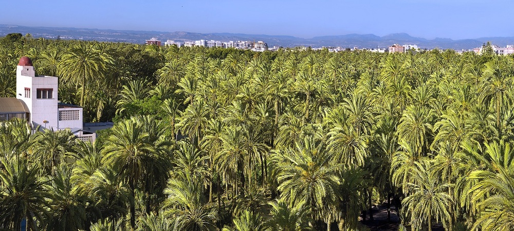
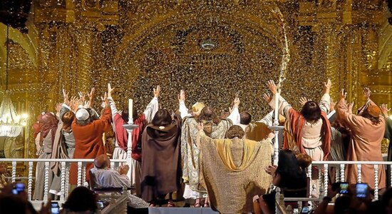
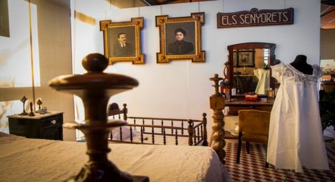

In 2000, the Palmeral was declared a Heritge of Humanity. It is a unique cultural landscape, of exceptional value and universal significance. It occupies an area of 507.4 ha and is made up of 200,000 specimens of palm trees, most of which are the Phoenix dactyliphera variety. It is worth noting the Imperial Palm, located in the Huerto del Cura, which is a specimen with 7 huge stems in the shape of a candelabrum.

It was declared a National Monument in 1931 and in 2001 it was proclaimed a Masterpiece of the Oral and Intangible Heritage of Humanity. It is a cultural work of medieval origin that is performed every year in the Basilica of Santa María in the month of August, specifically on the 14th and 15th. It is divided into 2 parts: the Vespra and the Festa. On the 14th, the Vespra is performed where the death of the Virgin Mary is represented. And on the 15th, the Festa is held where the Virgin's ascension to heaven is represented. In addition, these days we can enjoy this representation in the rehearsals that take place in the previous days.

| Day | Time | Representation | Entry |
|---|---|---|---|
| August 11 | 22:30 | General essay | € |
| August 12 | 22:30 | General essay | € |
| August 13 | 17:30 | General essay | Free |
| August 14 | 18:00 | First part: The Vespra | Free |
| August 15 | 18:00 | Second part: The Festa | Free |
In 2009, the UNESCO Committee for the Safeguarding of the Intangible Heritage included it in the Register of Exemplary Practices. It is a museum where we can learn about the rural environment and the culture of the countryside of Elche and the city. In it we can see more than 90,000 objects from the 19th century and the beginning of the 20th century where we can transport ourselves to that time.

| Monday to Friday | Weekends and holidays | |
|---|---|---|
| Winter | 9:00-13:30 ; 16:00-18:00 | 11:00-14:00 |
| Summer | 9:00-13:30 | 11:00-14:00 |
Elche is a culturally important city recognized by the world!